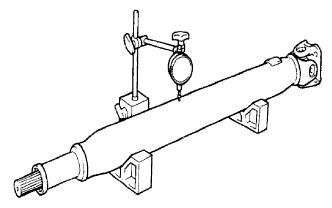

CỤM TRỤC CÁC ĐĂNG PHÍA SAU > THÁO RỜI |
| 1. THÁO CỤM VÒNG BI ĐỠ GIỮA NO.1 |
 |
Đánh các dấu ghi nhớ lên cả hai mặt bích.
Tháo 4 đai ốc và 4 vòng đệm.
Tách trục cácđăng và trục trung gian.
Cố định nạng bích tại phần vòng bi giữa lên êtô.
Dùng một đục và búa, mở khoá đai ốc hãm.
 |
Dùng SST và đầu khẩu, tháo đai ốc và đệm.
 |
Đánh các dấu ghi nhớ lên trục trung gian và khớp nạng bích.
Dùng SST, tháo mặt bích khớp cácđăng ra khỏi trục trung gian.
Tháo vòng bi giữa.
| 2. KIỂM TRA TRỤC CÁC ĐĂNG VÀ TRỤC TRUNG GIAN |
|  |
Dùng đồng hồ so, đo độ đảo của trục các đăng và trục trung gian.
| Hạng mục | Điều kiện tiêu chuẩn |
| Trục các đăng | 0.3 mm (0.012 in.) |
| Trục trung gian | 0.5 mm (0.02 in.) |
| 3. KIỂM TRA CỤM TRỤC CHỮ THẬP KHỚP CÁCĐĂNG |
Kiểm tra mòn hoặc hư hỏng của các ổ bi trục chữ thập.
Kiểm tra độ rơ dọc trục ổ bi trục chữ thập bằng cách quay khớp trong khi nắm chặt lấy trục cácđăng.
| 4. KIỂM TRA CỤM VÒNG BI ĐỠ GIỮA NO.1 |
 |
Khi quay vòng bi đỡ giữa bằng tay, kiểm tra rằng nó quay êm không bị kẹt, và không có vết xước hay hư hỏng.
Nếu có bất cứ hư hỏng nào, hãy thay thế nó.
Nếu có bất cứ hư hỏng nào đối với lợi của hộp vòng bi giữa, hãy thay thế nó.
| 5. THÁO CỤM TRỤC CHỮ THẬP KHỚP CÁCĐĂNG |
Đánh các dấu ghi nhớ lên nạng bích và trục.
Bùng một thanh đồng và búa, hãy đóng nhẹ các vòng ngoài của ổ bị trục chữ thập vào.
Dùng 2 tô vít, tháo 4 phanh hãm ra các khỏi rãnh.
Kẹp giữ trục các đăng sau lên êtô giữa các tấm nhôm.
Dùng SST, đóng ổ bi trục chữ thập phía khớp trượt cho đến khi: 1) trục chữ thập gần tiếp xúc với khớp trượt hoặc trục các đăng, và 2) ổ bi trục chữ thập bên phía đối diện bi đẩy ra một phần.
Kẹp vòng ngoài của ổ bi trục chữ thập vừa đẩy ra lên êtô và đóng tháo các đăng để tháo ổ bi trục chữ thập.
Tách khớp nạng và trục chữ thập ra khỏi trục các đăng.
Lắp lại các ổ bi trục chữ thập vừa tháo ra vào trục chữ thập và kẹp các ổ bi trục chữ thập lên êtô.
Dùng SST, đóng ổ bi trục chữ thập phía khớp nạng cho đến khi: 1) trục chữ thập gần tiếp xúc với khớp nạng, và 2) ổ bi trục chữ thập bên phía đối diện bi đẩy ra một phần.
Kẹp vòng ngoài của ổ bi trục chữ thập vừa đẩy ra lên êtô và đóng tháo nạng bích để tháo ổ bi trục chữ thập.
Tách trục chữ thập ra khỏi khớp nạng.
Thực hiện việc tháo các trục chữ thập khớp các đăng khác hãy dùng một quy trình giống nhau.